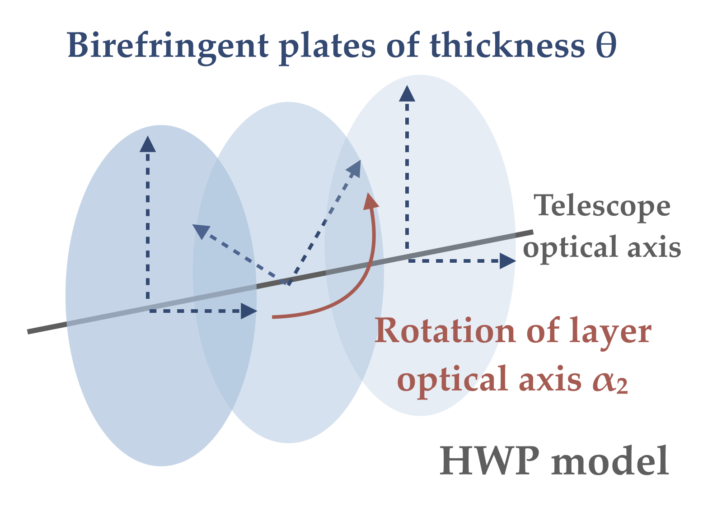
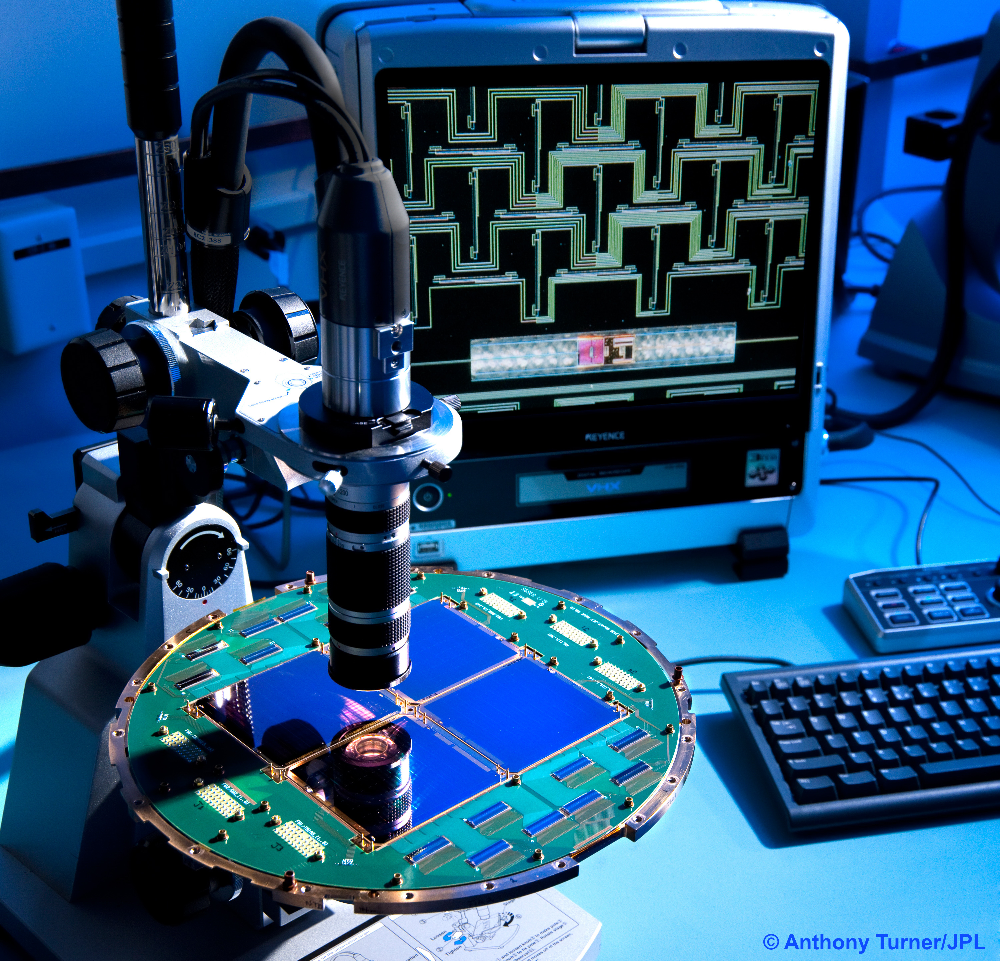

Research interests
My research work focuses on studying the signal of the CMB to look for a specific polarisation pattern: the cosmological B-modes.
The detection of this signal would be a smoking gun for inflation theories, allowing us to better understand the very beginning of the Universe.
I focus on developping better instrument models, to improve the way we design, calibrate and analyse data,
as well as on characterising instrumental systematic effects to estimate their impact on measurements and science results.

Instrument modeling
The detection of the very faint signal of the cosmological B-modes requires an accurate modeling of instrumental effects.
These models are needed for effective instrument design, calibration and data analysis. I participate in developping and improving models for future CMB polarisation experiments.
Instrumental effects
Measurements of instrumental parameters are an essential step to ensure that instrumental effects are properly
taken into account in the analysis.
I work on estimating the impact of various systematic effects on science results,
in particular on cosmological parameters of interest in the search for inflation.


Component separation
One of the main challenges in our quest for B-modes is to be able to separate the CMB signal from Galactic contaminations.
This step, known as component separation, requires accurate models of both the instrument and Galactic emission.
I develop component separation methods that take into account the interplay between instrumental characteristics, and galactic emission laws.